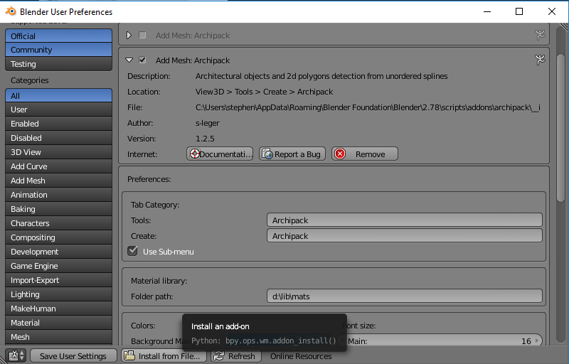
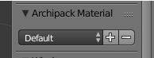

Materials
By default, archipack set "dumb" materials to objects.
You may want to setup your own default material library in a startup file.
Archipack will then look at scene and use allready present materials by name.
In order to know the name of materials in use for each kind of objects, simply create one.
Managing materials
Archipack does provide a material loader taking advantage of libraries of predefined materials.
Doing so allow to re-use materials across projects, and quickly set all materials of objects.
You may also use a startup scene with common and default materials.
Material libraries
Download default cycles material library sample
In addon preferences, there is a "material library path", use this to setup a path to a folder with material libraries in .blend files.
Archipack will load material from those files using material names.

Material sets
Archipack objects use more than one material so "Material Sets" are predefined groups of materials.

In N panel, you'll find "Archipack Material" with a dropdown list and +- button to choose/store/remove predefined material sets.

Materials sets are not materials, only a list of material names for each object's parts.
Loading - choose a material set
If not found in current in scene (by material name), archipack try to load materials from libraries when you create an object and when you choose a material set.
Saving
When you save a set, current material names are saved, so you have to ensure the materials are stored in your libraries.
Material sets store material names only, so you may use different sets of material libraries eg to handle more than one renderer.
Removing
Removing a set dosent remove material. This only remove the set definition.
Usefull tools
Matlib vx addon may be a great help here, to manage your libraries.